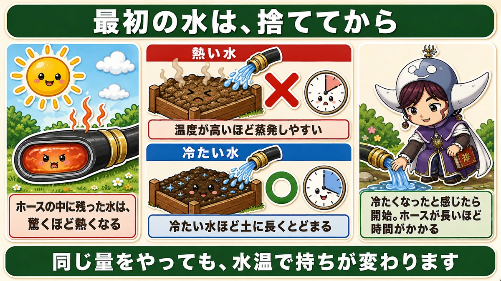
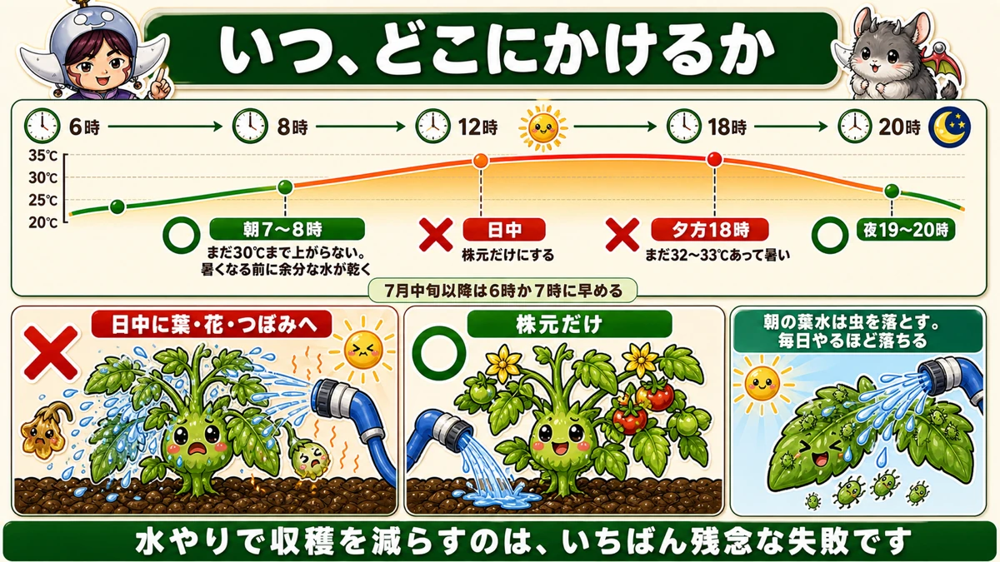
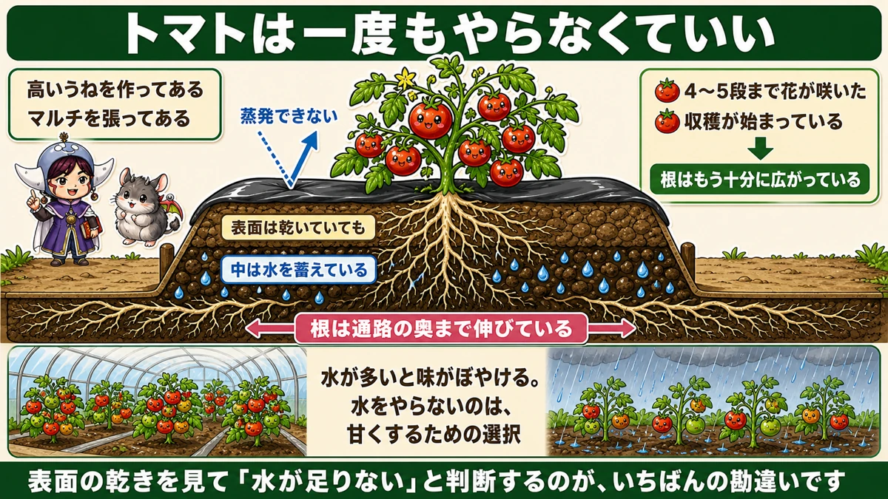
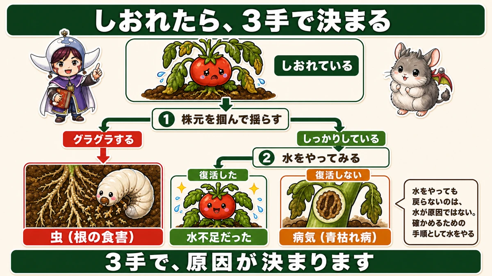

ホースの最初の水は、お湯です💧 そして夏野菜に水やりは要りません

🗨️「毎日水をやっているのに、元気がない」
🗨️「朝と夕方、どっちがいいの？」
🗨️「暑いから、たっぷりあげたほうがいいはず」
どうも、8150（えいこう）です🌱 家庭菜園歴8年、理科の教員免許を持っていて、有機・無農薬で野菜を育てています。
夏の水やりは、家庭菜園でいちばん「よかれと思って」やりすぎる作業だと思います。
先に、この記事でいちばん言いたいことを2つ言っておきます。
★ひとつ。ホースの最初の水は、お湯です。
★ふたつ。夏野菜に、そんなに水やりは要りません☺️
順にお話しします。
①★ホースの最初の水は、お湯です
出してみると、驚きます
暑い日に、水やり用のホースを握ってみてください。
★熱いはずです。
中に残っていた水が、日に当たって温まっています。ホースは細くて黒っぽいので、驚くほど熱くなります。
★そのまま出すと、お湯が出ます。

お湯をかけると、どうなるか
葉や土、花や実にお湯がかかる。それだけでも良くありませんが、もうひとつ問題があります。
★熱い水は、乾くのがとても早いんです。
理科の話をすると、水は温度が高いほど蒸発しやすくなります。分子が活発に動いているので、表面から飛び出しやすい。
★冷たい水ほど、土に長くとどまります。
せっかく水をやるなら、長く残ってほしいですよね。★同じ量をやっても、水温で持ちが変わります。
★冷たくなるまで、出す
やることは簡単です。
★水やりの前に、しばらく出しっぱなしにしてください。
手で触って、冷たくなったと感じたら開始です。★ホースが長いほど、時間がかかります。
私は、最初の水を通路にまいてしまいます。どうせ捨てるなら、道の土ぼこりを抑えるのに使えます。
②かける場所と、時間帯
★日中は、株元だけ
これも大事です。
★暑い時間帯に、葉や花に直接水をかけないでください。
葉は、実はそれほど焼けません。問題は別のところです。
★花、つぼみ、実が傷みます。

花が落ちます
具体的にはこうなります。
- ★花が熱くなって焼け、ポロッと落ちる
- ★つぼみが変形する
- 実の表面が傷む
せっかく咲いた花が落ちると、そのぶん収穫が減ります。★水やりで収穫を減らすのは、いちばん残念な失敗です。
★日中にどうしてもやるなら、株元だけにしてください。
★朝でも夕方でも、どちらでもいい
よく聞かれる質問ですが、答えは「どちらでもいい」です。
ただし、★時刻が大事です。
★夕方にやるなら … 7時か8時
6時ごろはまだ32〜33℃あることがあります。★暑いうちにやると、蒸れます。
★朝にやるなら … 7時か8時
まだ30℃まで上がっていません。そして★暑くなるまでの間に、余分な水が蒸発して乾きます。
7月の中旬からは、早める
季節が進むと、時刻もずらします。
★7月中旬以降は、6時か7時に早めてください。
朝の気温の上がり方が変わるからです。★8時ではもう暑い日が出てきます。
★葉水は、虫を落とします
朝に葉全体へ水をかけるのには、もうひとつ利点があります。
★葉に直接水をかけると、アブラムシやハダニが落ちます。
前にそら豆のところで、「筆で払う → 水で流す → 油石けん」という3段階をお話ししました。★その2番目を、毎日やっているようなものです。
★毎日やるほど落ちます。
「濡らすと病気になるのでは」と心配になりますが、★朝にかけていれば大丈夫です。無農薬で長くやっている方たちは、みなさんこの方法を使っています。
③★★そもそも、水やりは要りません
トマトは、1度もやらなくていい
ここからが本題です。
★条件がそろっていれば、トマトは一度も水をやらなくて構いません。
条件は2つです。
- ★高いうねを作ってある
- ★マルチを張ってある

根は、思っているより遠くまで伸びている
理由は、根です。
前に追肥の話をしたとき、「根の先端はもう株元にない」とお伝えしました。
夏になると、★根は通路の奥まで伸びています。うねの外まで出ています。
そして★高いうねほど、中に水を蓄えています。表面は乾いていても、少し下は湿っている。マルチがあれば、その水は蒸発しません。
★表面の乾きを見て「水が足りない」と判断するのが、いちばんの勘違いです。
★根が十分に広がったサイン
いつからやらなくていいのか。目安があります。
- ★4〜5段まで花が咲いた
- ★収穫が始まっている
このどちらかなら、★根はもう十分に広がっています。
★★水をやらないほうが、甘くなります
そしてここが、おいしさの話につながります。
★ハウスで育てたトマトが甘いのは、雨が入らないからです。
露地の畑では、雨が降ります。★水が多くなりすぎて、味がぼやけます。
トマトは、水が少ないほど中身が濃くなる野菜です。★水をやらないというのは、放っておくことではなく、甘くするための選択です。
前に「冬の野菜はなぜ甘くなるのか」という話をしました。★あれと似ています。少し厳しい環境のほうが、味は濃くなります。
★★しおれたときの、3つの見分け
やらないと決めても、しおれることはあります
「水をやらなくていい」と言っても、しおれたら心配になりますよね。
そのときの判断を、はっきりさせておきます。

まず、水をやってみる
★しおれていたら、まず水をやってください。
そして、そのあとを見ます。
★復活した → 水不足でした
やって正解です。そのまま様子を見てください。
★復活しない → ★それは病気です
前回の話と、つながります
前回、病気の見分け方をお話ししました。★株元を掴んで揺らす方法です。
- ★グラグラする → 虫（根を食べられている）
- ★しっかりしている → 病気（青枯れ病）
ここに、★3つ目が加わります。
- ★水をやって復活する → 水不足
つまり、こういう順番で調べられます。
★1. 株元を掴む。グラグラなら虫
★2. しっかりしていたら、水をやる
★3. 復活すれば水不足。復活しなければ病気
★3手で、原因が決まります。
「水をやったのに戻らない」は、水のせいではない
ひとつ、誤解しやすいところがあります。
★水をやっても戻らないのは、水が原因で病気になったからではありません。
もともと病気にかかっていて、たまたま症状が水不足と似ていただけです。★水をやったことは間違いではありません。
★確かめるための手順として、水をやる。そう考えてください。
プランターは、話が別です
ここまでは畑の話でした
大事な補足です。
★ここまでの「水やりは要らない」は、畑の話です。
プランターは条件がまったく違います。
- ★土の量が限られている
- ★根が外へ逃げられない
- ★底から水が抜けていく
★畑のように「下のほうに水が残っている」ということがありません。
プランターは、毎日見てください
だからプランターは、★夏は毎日、朝に水をやってください。
以前プランターの記事でお伝えしたとおり、★水のやりすぎで枯れることもあります。でもそれは主に冬の話です。
★夏は、乾きすぎのほうがずっと多い。土の表面を指で触って、乾いていたらやる。この確認だけは続けてください。
今日から変えられること
この記事の要点
- ★ホースの最初の水は、お湯になっている
- ★★熱い水は乾きが早い。★冷たい水ほど土に長くとどまる
- ★冷たくなるまで出してから水やりを始める。ホースが長いほど時間がかかる
- ★日中は、葉・花・つぼみに水をかけない
- ★葉は焼けないが、★花が焼けて落ち、つぼみが変形する
- ★日中にやるなら株元だけ
- 時間帯は★朝でも夕方でもよい。ただし★7時か8時
- 夕方の6時はまだ32〜33℃あって暑い
- ★7月中旬以降は6時か7時に早める
- ★朝の葉水はアブラムシやハダニを落とす。★毎日やるほど落ちる
- ★朝にかけていれば病気にはならない
- ★★高いうねとマルチがあれば、トマトは一度も水をやらなくていい
- ★根は通路の奥まで伸びている。★表面の乾きで判断しない
- ★4〜5段まで花が咲いた／収穫が始まっているなら、根は十分広がっている
- ★★水をやらないほうが甘くなる。★ハウスのトマトが甘いのは雨が入らないから
- しおれたときは★①株元を掴む（グラグラなら虫）★②水をやる ★③復活すれば水不足、しなければ病気
- ★水をやっても戻らないのは、水が原因ではない。確かめる手順として水をやる
- ★★プランターは話が別。土の量が限られ、根が逃げられない
- ★プランターは夏は毎日、朝に。★表面を指で触って乾いていたらやる
全部やろうとしなくて大丈夫です。まずは明日の朝、ホースを握ってみてください。★熱かったら、しばらく出しっぱなしにする。それだけで今日は十分です💧
次回は、収穫のタイミングの話。早すぎても遅すぎても損をする、その見極め方をお話しします🥒
ここまで読んでくださって、ありがとうございました。
敷きわら
そもそも水をやらなくて済むようにするための道具です。土の表面から逃げる水を止めます。
![[商品価格に関しましては、リンクが作成された時点と現時点で情報が変更されている場合がございます。]](https://hbb.afl.rakuten.co.jp/hgb/56bc2fb2.ff40a6e6.56bc2fb3.618f6a70/?me_id=1257026&item_id=10000211&pc=https%3A%2F%2Fthumbnail.image.rakuten.co.jp%2F%400_mall%2Fsharuka%2Fcabinet%2F09042254%2Fimgrc0081094692.jpg%3F_ex%3D240x240&s=240x240&t=picttext "[商品価格に関しましては、リンクが作成された時点と現時点で情報が変更されている場合がございます。]")

じょうろ（8L）
プランターは話が別です。1日2回、鉢底から流れ出るまでやります。

穴あきマルチ
高いうねとマルチができていれば、トマトは一度も水をやらずに済みます。
![[商品価格に関しましては、リンクが作成された時点と現時点で情報が変更されている場合がございます。]](https://hbb.afl.rakuten.co.jp/hgb/55521906.a3595d78.55521907.92994d18/?me_id=1225177&item_id=10035007&pc=https%3A%2F%2Fthumbnail.image.rakuten.co.jp%2F%400_mall%2Fssn%2Fcabinet%2F02584092%2F07223762%2F4980356008386_1.jpg%3F_ex%3D240x240&s=240x240&t=picttext "[商品価格に関しましては、リンクが作成された時点と現時点で情報が変更されている場合がございます。]")
給水式プランター
夏のプランター栽培をいちばん楽にする方法です。底に水をためておけます。
![[商品価格に関しましては、リンクが作成された時点と現時点で情報が変更されている場合がございます。]](https://hbb.afl.rakuten.co.jp/hgb/56d750eb.4adaaa3a.56d750ec.674e1165/?me_id=1203559&item_id=10121847&pc=https%3A%2F%2Fthumbnail.image.rakuten.co.jp%2F%400_mall%2Fyminfo%2Fcabinet%2F00045323%2F811029.jpg%3F_ex%3D240x240&s=240x240&t=picttext "[商品価格に関しましては、リンクが作成された時点と現時点で情報が変更されている場合がございます。]")
あわせて読みたい